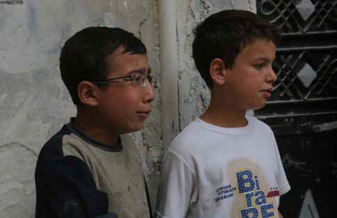

Aleppo, Syria. 2 June 2016. A child cries after losing his family members in a surface to surface missile attack in the Al-Ameria area of Aleppo. The Syrian Civil Defense is trying to rescue two of his younger siblings, who are trapped under the rubble and it is not known whether they are still alive. Today is the third day of intense shelling in northern Syria. The number of casualties keeps rising as the Syrian Civil Defense and other rescuers continue to pull out victims from the rubble. Government fighter jets have continued the shelling of the Al-Castello road, a strategic link between Aleppo and its countryside. As a result it is extremely dangerous to travel along that road, which has been recently called ‘the road to death’. With the Al-Castello road being constantly targeted it is extremely dangerous to travel in and out of Aleppo. This in turn hinders the flight of refugees from Aleppo and makes the city of Aleppo and its million and a half inhabitants practically besieged.